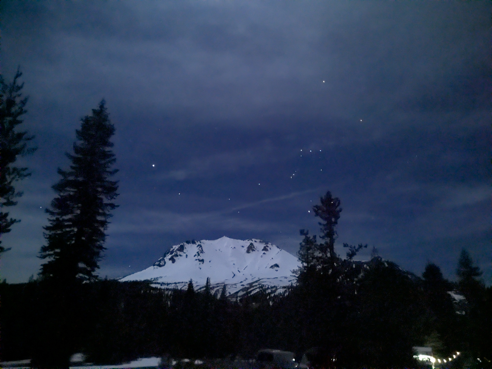
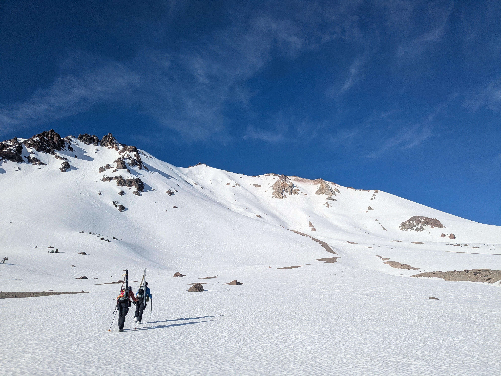
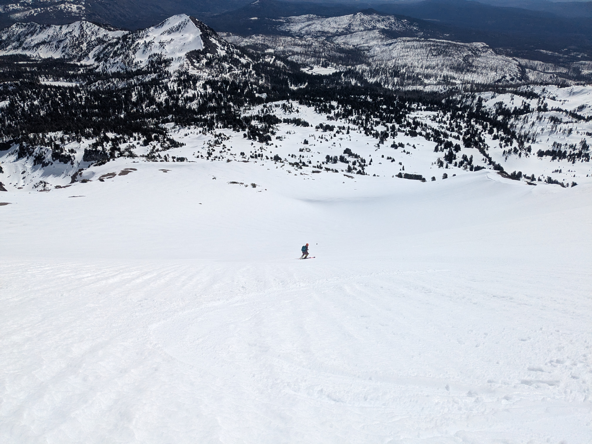
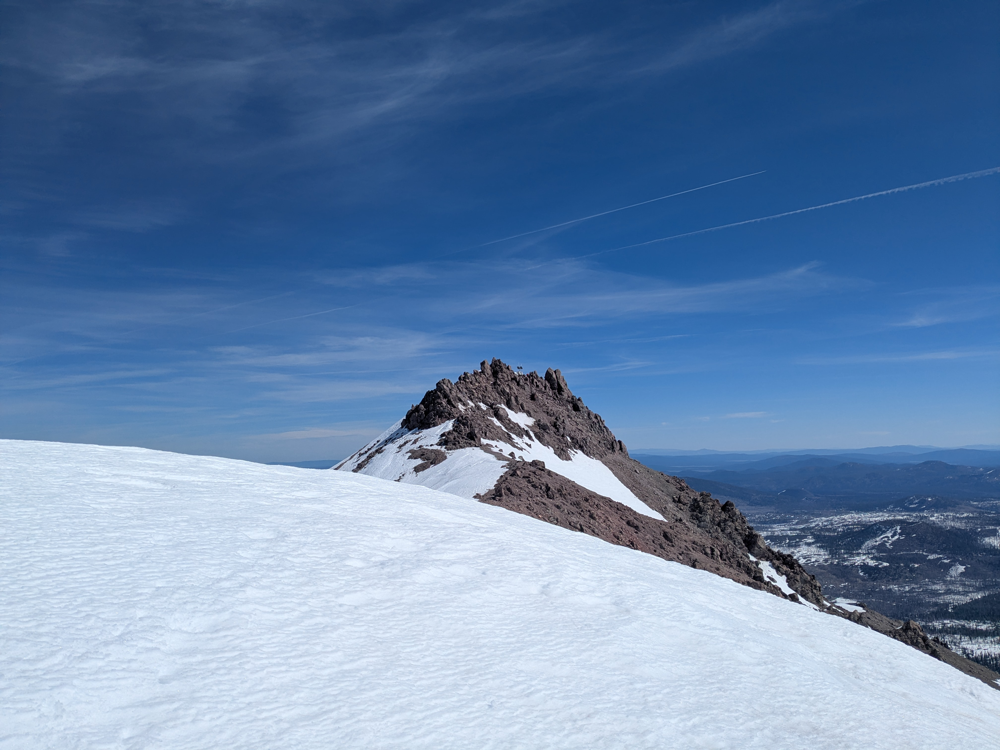
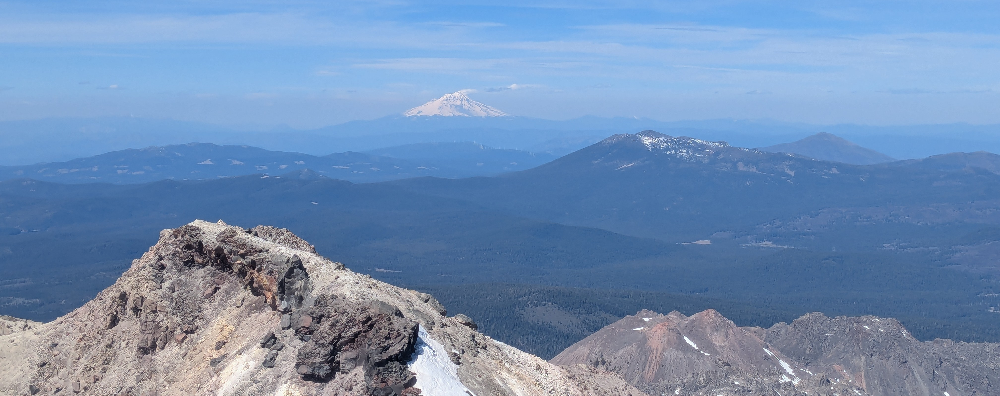
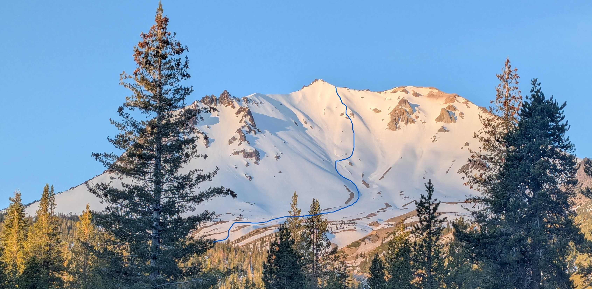

Coworker Cal and I met up with acquaintance Marie to ski Lassen. Cal and I carpooled up from the Bay after work on Friday and met Marie in the Devastated Area parking lot, just before the winter gate. A great night sky let us briefly preview the route before turning in for the night.

We got a relatively late start because we were anticipating the North face to be firm until later in the day, which proved to be a good choice. We left the parking lot at 7:30, just as the sun was starting to hit the upper mountain. Cal and I started in trail runners, which quickly became a game of how far we could get in the discontinuous but icy snow through the forest. Meanwhile, Marie was happily chugging along in ski boots. After a few too many slips, Cal and I put on ski boots and crampons, as we hit open country. Cal, nursing some respiratory issues from a recent cold, eventually bowed out and turned around. Marie and I found a good line and booted up, passing a few parties on the way.

On the summit plateau, we discussed next steps. It was clearly too firm for a good ski, and would likely remain that way for a while. We met up with a hiker from Georgia who had just done the summit route from the visitor center—an impressive slog, especially without the reward of the ski back. He was blown away that we were on skis and intended to ski down the mountain. Marie successfully convinced me to ski down the South face, with its substantially softer snow, although it came with the commitment of getting back up to the top.

We made the right call. The South Face was perfect corn, and I ripped down the open slope. Other than my Ostrander trip in February, which hadn’t actually involved very much skiing, these were my first real turns of the year. I was initially hesitant about how far I wanted to descend, fearing I would run out of energy on the uphill. But Marie later told me, “I saw the grin on your face from 200 yards away and knew you weren’t stopping until the bottom.” Not only were conditions perfect, but I could feel the rust shaking off with every turn, and I felt GOOD by the end.
The slog back up was indeed a slog, and I was grateful to have Marie breaking trail. Back up on the summit plateau, we worked our way over to the summit pyramid in increasing wind and tagged the summit. I had hiked Lassen back in 2016 via the summer trail, but I much prefer it as a ski.


I briefly considered skiing the couloir at the top of the summit pyramid, but the icy conditions had me a bit spooked. At the end of the last season I think I would have gone for it, but I hadn’t gotten enough practice this season to be willing to go for it. We started down from the shoulder on icy snow, traversing the upper slopes and looking for some good snow. We found patches of good snow and let loose again until inevitably finding another teeth-rattling icy section. Once off the main headwall we found consistent corn and managed to magically chain together nearly continuous snow until the last hundred yards before the road.

Cal was back at the car, after having traversed over towards the crater for some photography, enjoying a beer and a book. We had made great time, and enjoyed jalapeno chips and beer in the parking lot, fielding questions from skiers hoping to summit on Sunday and from random tourists who could barely comprehend that people ski from the top.